CAPITAL AVENGERLAND
This is a short list of the locations in London, this is by no means a complete list as I am now part of a team putting together a comprehensive guide to filming locations in London.
I have listed the locations on this page in an INDEX TO CAPITAL AVENGERLAND.
London W..
Park Lane, W1
THE PRISONER
In the title sequence of most episodes the secret agent is seen
driving through the barriers of an underground car park (Cumberland Gate entrance). He walks down a
long corridor (pedestrian access to Park
Lane) and hands his resignation to a man (George
Markstein) in a small office (doorway
to corridor near the entrance).
THE PRISONER: Many Happy Returns (Joseph Serf: February/April
1967)
On hearing a police siren Number 6 (Patrick
McGoohan) jumps from the Netco van only to find himself in central
London, near Marble Arch.
THE PRISONER: Do Not Forsake Me Oh My Darling (Pat Jackson:
August 1967)
Number 6 returns to his old office.
THE CHAMPIONS: The Gilded Cage (Cyril
Frankel: September 1967)
Craig Sterling stays at the Dorchester Hotel when he goes to London in search
of the kidnapped Richard.
THE CHAMPIONS: Nutcracker (Roy Ward Baker: February 1968)
Craig, Richard and Sharron stay at the London Hilton Hotel during their stay in
London.
THE SAINT: The Time to Die (Roy Ward Baker: April 1968)
The morning after the attempt on his life, Simon Templar drives through London
and passes Marble Arch.
Burlington Arcade W1
THE CHAMPIONS: Nutcracker (Roy Ward Baker: February 1968)
A secret vault is hidden beneath a tailor's shop in a London arcade
(found by Wyn Roberts and Jaz Wiseman, July 2000)
Duke of Wellington Place, W1
THE PRISONER: Many Happy Returns (Joseph Serf: February/April
1967)
Number 6 (Patrick McGoohan) walks
home through London after his escape from the village and is distracted by a
photographer.
Bryanston St.,
W1
(Identified by Wyn Roberts May 2000)
THE AVENGERS: The £50,000 Breakfast
()
Steed visits the offices of Alex Litoff (Marble Arch Tower) in his
Bentley.
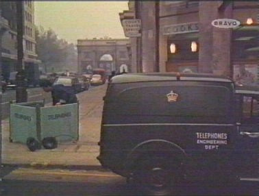
THE AVENGERS: Homicide and Old Lace
(John Hough: January 1969)
Japanese agents from Intercrime sabotage
London's telephone system.
Park Crescent, W1
THE AVENGERS: My Wildest Dream (Robert
Fuest: March 1968)
After Dyson leaves the offices of Acme Precision Company Ltd.Tara chases him down
Park Crescent and into
Portland Place.
THE SAINT: The Time to Die (Roy Baker: April 1968)
The morning after the attempt on his life, Simon Templar drives through London
(from Portland Place on to Park Crescent) in his Volvo.
Grosvenor Street, W1
THE AVENGERS: Love All (Peter Sykes:
November 1968)
Tara visits the offices of Bellchamber Brothers (the
London office of the Estee Lauder Group, between No.s 75 and 76) in
her Lotus. While she is there, she is seen by Martha (Veronica Strong) who rushes across the road to tell her
boss.
(Identified by Wyn Roberts May 2000)
Harley Street, W1
THE CHAMPIONS: Nutcracker (Roy Ward Baker: February 1968)
Duncan visits the offices John Warre, dental surgeon (35 Harley Street)
(found by Wyn Roberts and Jaz Wiseman, July 2000)
Weymouth Mews,
Weymouth St., W1
(Identified by Wyn Roberts April 2000)
THE AVENGERS: The Forget-Me-Knot (Robert
Jones: )
Sean Mortimer (Patrick Kavanagh)
escapes from his captors but as he reaches a taxi he cannot remember where he
wants to go.

THE AVENGERS: My Wildest Dream
(Robert Fuest: March 1968)
Nurse Owen (Susan Travers) attacks Chilcott (Edward
Fox) as he
walks home. She drugs him and drives him away in her car.
THE AVENGERS: Stay Tuned (Don Caffey:
November 1968)
Steed (Patrick Macnee) wanders the
streets at night and receives a knockout punch from an unseen assailant (Gary Bond). Steed takes Tara (Linda Thorson) to Fitzherbert Street to
confirm his suspicions. Later Steed is followed to Fitzherbert Street by
Collins (Howard Marion-Crawford)
who observes Steed being tailed by Proctor.
THE AVENGERS: Homicide and Old Lace
(John Hough: January 1969)
Harriet and Georgina watch as Mother (Patrick
Newell) arrives with Rhonda (Rhonda
Parker) in the street below. Later Mother tells how Steed and Tara snatch
a haul of Intercrime's ill-gotten gains from outside a London Jeweller's. The
action takes place just outside "The Dover Castle" pub.
Mansfield St., W1
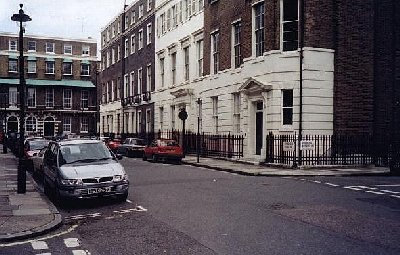
(Photo: Wyn Roberts
April 2000)
THE AVENGERS: My Wildest Dream
(Robert Fuest: March 1968)
Tara chases Dyson but loses him on Marlin Street (corner
of Mansfield St. and Duchess Street). Later Nurse Owen (Susan
Travers)
leaves Jeager's clinic (No. 8) just before Tara arrives in
her Lotus.
(Identified by Wyn
Roberts April 2000)
Dutchess Mews,
W1
(Source: Dave
Rogers)
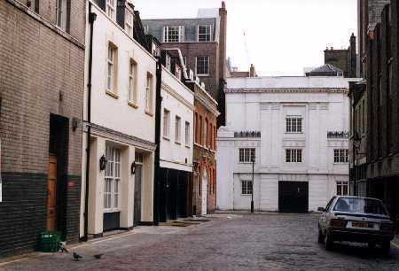
THE AVENGERS
Steed's flat
Norfolk Crescent, W2
THE CHAMPIONS: The Gilded Cage (Cyril
Frankel: September 1967)
Richard Barratt's Geneva flat from which he is kidnapped by two men posing as
carpet cleaners. Craig (Stuart Damon) arrives just in time to see the van drive
away.
(Source: Sam Mitchell)
THE CHAMPIONS: Get Me Out of Here!
(Cyril Frankel: )
The hotel where Professor Anna Maria Martes is held against her will.
Leinster Gardens, W2
THE SAINT: The Time to Die
Mary Ellen Brent and Simon Templar
leave Leinster Towers (The Blakemore Hotel) after a fantastic night on
the town. They get into Simon's Volvo and drive away.
(Spotted by Wyn Roberts, May 2000)
Warwick Crescent, W2
THE STRANGE REPORT ()
Adam Strange's house.
(Source: Sam Mitchell)
Hyde Park
Gardens Mews, Sussex Place, W2
(Source: Sam Mitchell)
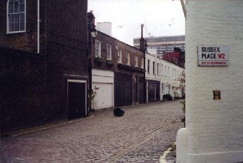
(Photo: Wyn Roberts April 2000)
THE CHAMPIONS: To Trap a Rat (Sam Wanamaker: May 1967)
Craig follows the peanut vendor to his house. He parks at the corner of Sussex
Place to watch the house overnight
Queensway, W2
THE CHAMPIONS: To Trap a Rat (Sam Wanamaker: May 1967)
Sharon (Alexander Bastedo) follows
Jane Purcell (Kate O'Mara) to
Whiteley's department store where she goes shoplifting.
Later Jane (Kate O'Mara)
introduces Sharon (Alexander Bastedo)
to her dealer, Edwards(Michael Standing)
in the back of a taxi (corner of Westbourne Grove
and Queensway).
(Identified by Wyn
Roberts May 2000)
Westbourne Terrace Road Bridge, W2
THE AVENGERS: My Wildest Dream
(Robert Fuest: March 1968)
Nurse Owen is seen
driving a way from Jeager's clinic.
(Identified by Wyn
Roberts May 2000)
St. Peter's Square, W6
THE NEW AVENGERS ()
Purdey's flat.
(Source: Sam Mitchell)
Victoria Road, W8
THE SAINT: The Scales of Justice
Anna Kirby (Jean Marsh)
leaves the house of Elliot Stratton (2 Albert
Place) and signals for a taxi at the end of the street (Douro Place). Elliot Stratton (Mark Burns) gives chase in his Jaguar.
With no sign of a taxi, Anna Kirby then makes her way on foot (St. Albans Grove toward Victoria Rd then along St.
Albans Grove. turning left into Victoria Rd.) to find a bus stop.
Simon pays a visit to the Stratton's house but is too late to catch neither
Anna nor Elliot. He dashes from the house and drives off in his Volvo.
(Identified by Wyn Roberts, May 2000)
Clifton Gardens, W9
THE AVENGERS: Take Me to
Your Leader (Robert Fuest: November
1968)
Steed arrives as Mr Richard Straus, at the Cremone Hotel, Sloane Street (No.
16) and enters with the case while Tara (Linda Thorson) waits
outside in the Yellow Rolls Royce. The next contact soon arrives and checks his
gun before entering.
(Identified by Wyn Roberts, May 2000)
Elgin Mews South, W9
THE AVENGERS: Take Me to
Your Leader (Robert Fuest: November
1968)
After leaving the Cremone Hotel with the case the contact drives into a quiet
mews to listen to his instructions. Tara (Linda Thorson) takes this
opportunity to knock the contact out and leaves with the case.
(Identified by Wyn Roberts, May 2000)
Blomfield Road, W9
THE AVENGERS: Take Me to
Your Leader (Robert Fuest: November
1968)
Steed (Patrick Macnee) and Tara (Linda Thorson) arrive at the
telephone box (near Randolph Road junction) in Cramley High Street in
Steed's yellow Rolls Royce as instructed. After being identified by the next
contact, Tara walks home followed by the contact - and Steed.
(Identified by Wyn Roberts, May 2000)
Maida Vale, W9
THE AVENGERS: Take Me to
Your Leader (Robert Fuest: November
1968)
Tara follows one of the contacts from the "luggage-loading bay at King's
Cross Station", past a block of flats (Edinburgh House No.155).
(Identified by Wyn Roberts, May 2000)
Grantully Road, W9
THE AVENGERS: Take Me to
Your Leader(Robert Fuest: November 1968)
After leaving the station one of the contacts gets into his car and is then
followed by Steed in his yellow Rolls Royce.
(Identified by Wyn Roberts, May 2000)
Lauderdale Road, W9
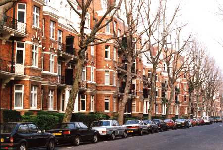
RANDALL AND HOPKIRK DECEASED: My Late
Lamented Friend and Partner ()
Home of Jean and Marty.
Sutherland
Avenue, W9
(Identified by Wyn Roberts April 2000)
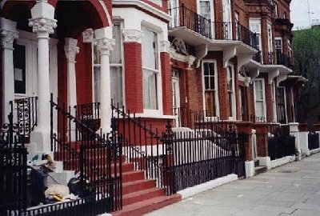
(Photo: Wyn
Roberts May 2000)
THE AVENGERS: Love All (Peter
Sykes: November 1968)
Sir Rodney (Robert Harris) escapes to visit Martha (Veronica Strong) at
her (probably No. 126) home. He persuades her to run away with him but
as they leave in his car, she kills him.
THE AVENGERS: Whoever Shot Poor George...(Cyril Frankel: May 1968)
Jacobs (John Porter-Davision) follows Steed to Baine's apartment (182
Sutherland Avenue) and enters with murder on his mind.
(Identified by Wyn
Roberts May 2000)
White City Underground Station, W12
MAN IN A SUITCASE: Man from the Dead (Pat Jackson: August 1966)
McGill (Richard Bradford) buys a newspaper from outside a London underground
station.
(Identified by Richard Bignell, May 2000)
White City Road, W12
MAN IN A SUITCASE: Man from the Dead (Pat Jackson: August 1966)
White City Stadium (demolished)
London NW..
Osnaburgh Street, NW1
THE SAINT: The Time to Die (Roy Ward Baker: April 1968)
The morning after the attempt on his life, Simon Templar drives through London
in his Volvo. As he passes a hotel (the Melia
White House Hotel), a car pulls out and follows him.
(spotted by Wyn Roberts)
THE AVENGERS: Love All (Peter Sykes:
November 1968)
After falling for Bromfield, Bromfield tells
Tara to fall a little further. She climbs on to the ledge of a building (No
34 Osnaburgh St.) overlooking a hotel (the Melia White House Hotel) and
prepares to jump.
Regent's Park Road, NW1
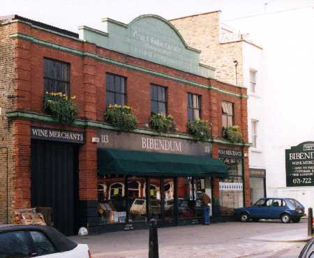
THE CHAMPIONS: To Trap a Rat (Sam Wanamaker: May 1967)
Richard tails the Peanut Vendor to Chesterfield Motors. Here he makes contact
with Sandra (Edina Ronay).
(Source: Sam Mitchell)
Camden Market, NW1
THE NEW AVENGERS: Sleeper ()
Scenes on bridge and bar by canal.
Princess Mews, Belsize Lane, NW3
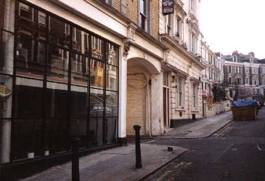
THE AVENGERS: Get-Away!
(Don Sharp: February 1968)
Bryant's Natural History Magazine offices.
(Source: Sam Mitchell)
Kenwood House,
Hampstead Heath, NW3
MAN IN A SUITCASE: Essay in Evil
(Freddie Francis: June 1967)
On his bedside table, James Harris has a photograph of his wife and two
children sitting in front of Kenwood House.
Film:
NOTTING HILL (1999)
Heath Brow
(behind Jack Straw's Castle), North End Way, NW3
(Identified by Wyn
Roberts April 2000)
|
|
|


THE AVENGERS: Requiem (Don Chaffey:
January 1969)
Steed (Patrick Macnee) and Bobby Cleaver
(Harvey Ashby) arrive in their car at a "car park on the other
side of town" to pick up Miranda
Loxton (Angela Douglas). She is waiting but Rista (Terence Sewards) and Murray
(Denis Shaw) soon
arrive in a van, guns blazing.
Bellmoor, East
Heath Rd./Heath Street, NW3
(Identified by Wyn
Roberts April 2000)
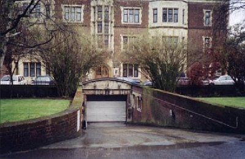
(Photo: Wyn
Roberts April 2000)
THE AVENGERS: The Rotters (Robert
Fuest: September 1968)
Kenneth (Gerald Sim) and George (Jerome
Willis) arrive in
their Wormdoom van at the home of Sir James Pendred. They enter the house and
are soon joined by Tara King (Linda
Thorson) who
arrives in her Lotus Europa.
THE AVENGERS: Requiem (Don Chaffey:
January 1969)
Rista (Terence Sewards) and Murray
(Denis Shaw) lay in
wait for the arrival of Miss Miranda Loxton (Angela
Douglas) and her
bodyguard in a basement car park. Their car arrives, driving down the ramp, as
expected and the bodyguard is shot but Miss Loxton manages to make her escape
in the car in which she arrived.
THE AVENGERS: Who Was That Man I Saw You With? (Don
Chaffey: January 1969)
Tara (Linda Thorson) garage drives her Lotus Europa down the ramp
into Maple Garage. She has been followed by Fairfax (William Marlowe) who parks his car at the top of the ramp
before reporting to Mother's department by radio. Fairfax enters garage on foot
and is shot by an unseen assailant. When Steed (Patrick Macnee) arrives he finds Tara standing by the body holding
her gun.
19a Chalcot
Crescent, NW3
(Source: Dave
Rogers)
|
THE AVENGERS |
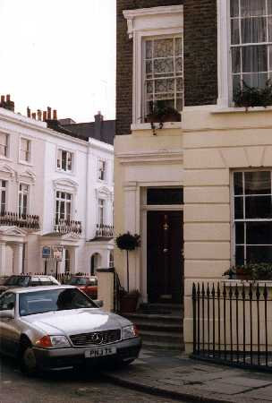 |
THE AVENGERS: Stay Tuned
Tara takes
Steed is to visit a psychiatrist to cure his amnesia (No.33).
Belsize Square, NW3
MAN IN A SUITCASE: Man From The Dead
McGill stakes out Rachel Tyson's flat (No.30) from the house opposite (No.26).
He is in a good position to see that she is under observation by others. One
night Rachel Tyson () leaves the house and he follows her.
Hampstead High St.NW3
MAN IN A SUITCASE: Man From The Dead
McGill has
employed a detective () to watch Rachel (Angela Browne) and he observes as she
makes a telephone call in the street (outside No74).
Hamilton Terrace, NW8
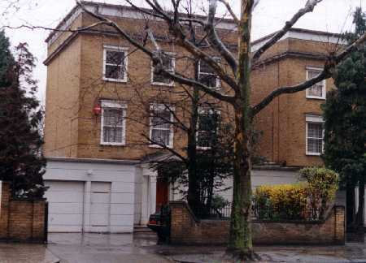
THE CHAMPIONS: The Gilded Cage (Cyril
Frankel: September 1967)
The house were Richard Barrett is held prisoner.
(Source: Sam Mitchell)
THE AVENGERS: Take Me to
Your Leader (Robert Fuest: November
1968)
Tara (Linda Thorson) is directed to leave the case in the crypt of a church (St.
Mark's, on the corner of Abercorn Place).
Fortunately, she escapes an intended trap and leaves at high speed confusing a
vicar in the process.
(identified by Wyn Roberts)
Imperial Court, Prince Albert Rd./Avenue Rd, NW8
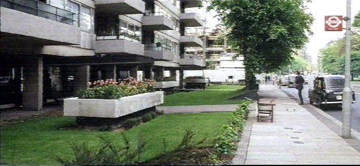
MAN IN A SUITCASE: Jigsaw Man (Charles Frend: February/March 1967)
McGill visits Marcia in flat No.512.
(Spotted by Wyn Roberts)
THE CHAMPIONS: To Trap a Rat (Sam Wanamaker: May 1967)
Jane Purcell (Kate
O'Mara) is locked in a flat by her father in order to do cold turkey. She is
watched by all three of the Champions from a spot across the road next to the
Regent's Canal. They deliberately engineer her escape so that she will lead
them to her pusher. She heads off over the bridge on her way to Whiteley's
department store where
Sharon follows her.
(Identified by Sam Mitchell)
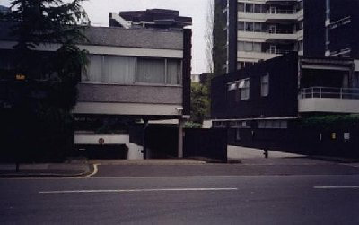
(Photo: Wyn
Roberts May 2000)
THE AVENGERS: False Witness (Charles
Crichton: June 1968)
Melville (Barry Warren) is supposed to be keeping watch, by a telephone box (on the corner of Townshend Road and Mackennall
Street), for his colleague, Penman (Peter
Jesson) as he breaks searches through a car in an underground car
park. Melville is unable to warn Penman when Lord Edgefield's chauffer arrives.
Later Melville performs the same service as Steed searches Lord Edgefield's
flat.
(Identified by Wyn Roberts)
THE SAINT:
The Scales of Justice ()
Simon arrives at Penthouse apartment for a meeting of London businessmen with
bad news.
(Identified by Wyn Roberts)
Embassy Court, Wellington Rd., NW8
THE SAINT: The Counterfeit Contessa ()
(Source: Sam Mitchell)
Cavendish Place, NW8
THE AVENGERS:
The Interrogators (Charles Crichton: October 1968)
Steed arrives in his Bentley for a meeting with Mother. He enters the
underground headquarters through a telephone box (against
the wall of the Nursery, Lord's Cricket ground) just as Tara is
leaving. Later Roy Casper (Philip Bond) leaves
the HQ and immediately releases a carrier pigeon from his car.
(Identified by Wyn Roberts May 2000)
Boydell Court , St.John's Wood Park, NW8
THE AVENGERS: The
Hidden Tiger (Sidney Hayers: January 1967)
Steed races to the home of Samuel Jones'.
(Spotted by: Sam Mitchell)
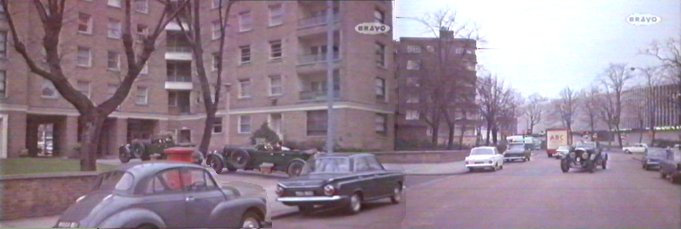
THE AVENGERS: Super Secret Cypher Snatch (James
Hill: June 1968)
Jarret's flat is under observation by the Class Glass window cleaners, Maskin (Simon Oats) and Vickers (Donald Gee). They watch as Steed (Patrick Macnee) arrives in his Rolls
Royce. The Classy Glass cleaners follow Peters (John
Carlisle) as he leaves with some important photographs.
(Identified by Wyn Roberts)
Regent's Park Zoo, NW8
THE CHAMPIONS: To Trap a Rat (Sam Wanamaker: May 1967)
Craig (Stuart Damon) follows Edwards (Michael Standing) Regent's Park Zoo where he buys drugs
concealed in a pack of peanuts from a vendor outside the Snowdon Aviary. Craig
follows the peanut vendor as he leaves.
U.F.O.: The Long Sleep ()
St. John's Wood High Street, NW8

RANDALL AND HOPKIRK DECEASED ()
Jeff Randall's flat.
THE CHAMPIONS: To Trap a Rat (Sam Wanamaker: May 1967)
Craig follows Sandra (Edina
Ronay) to her apartment ("Northgate",
she uses the entrance in St. John's Wood High St. This is next door to Hanover
House where Jeff Randall lives). Later she takes her dog for a walk in the gardens (St. John's Wood Church grounds) where Richard (William Gaunt) pretends to steal her bag and Craig (Stuart Damon) pretends to wrestle it off him in order to
ingratiate himself with her.
(Source: Wyn Roberts)
Grove House, Prince Albert's Road, NW8
THE CHAMPIONS: Full Circle ()
The Embassy of the Colombrian States.
Wellington Road, NW8
THE PERUADERS!: Element of Risk
(Eyre
Court)
London WC..
Southampton Row, WC1
THE PRISONER: Do Not Forsake Me Oh My Darling (Pat Jackson:
August 1967)
Number 6 walks into World Cameras to collect his transparencies but is being
observed.
Victoria Embankment, WC1
MAN IN A SUITCASE:
Who's Mad Now? (Freddie Francis: 1967)
McGill meets Joan Hyman for lunch to discuss her visions. McGill (Richard
Bradford) is followed as he leaves the meeting and crosses the road.
THE PRISONER: Fall Out (Patrick McGoohan: December 1967)
The trailer carrying Number 6 (Patrick McGoohan) and Number 2 (Leo
McKern), driven by the Butler (Angelo Muskat) is pulled over by a
motorcycle policeman. All three get out and make their way towards Parliament
Square.
Trafalgar Square, WC2
THE PRISONER: Fall Out (Patrick McGoohan: December 1967)
As the trailer carrying Number 6 (Patrick McGoohan) and Number 2 (Leo
McKern) passes by Trafalgar Square a motorcycle policeman starts following
it.
THE CHAMPIONS: The
Gilded Cage (Cyril Frankel: September 1967)
The pigeon Richard Barrett released from his cell is found in Trafalgar Square.
THE AVENGERS: Homicide and Old Lace
(John Hough: January 1969)
Operation Rule Britannia is put in place and the treasures of the National
Gallery are removed.
London EC..
Gresham Street, EC2
THE CHAMPIONS: The Invisible
Man (Cyril Frankel: April 1967)
From Sir Fredrick's point of view we see him drive his car into a narrow lane
(Ironmonger Lane) in order to loose his invisible companion. Later Sharron
and Craig find it difficult to keep up with Sir Fredrick (Basil Dignam) as
he runs from his invisible attacker (between Wood St. and Guildhall Place).
He runs down a side street (Milk Street) and then a narrow lane (Mumford
Court). Here Craig abandons his car and continues his chase on foot. The
both turn right into an alleyway (redeveloped).
(Identified by Wyn Roberts May 2000)
Aldermanbury, EC2
THE CHAMPIONS: The Invisible
Man (Cyril Frankel: April 1967)
After a frantic drive to escape his invisible shadow, Sir Fredrick (),
brings his car to a halt near a church (St Lawrence Jewry). Only to find
that there is no escape.
(Identified by Wyn Roberts May 2000)
Cheapside, EC2
THE CHAMPIONS: The Invisible
Man (Cyril Frankel: April 1967)
Establishing shot of Bank Station looking toward the Royal Exchange.
Old Broad Street, EC2
THE CHAMPIONS: The Invisible
Man (Cyril Frankel: April 1967)
Sir Fredrick () runs across a building site (current location of
London Stock Exchange) and finally seeks refuge from his invisible attacker
in an alleyway (Adams Court). Craig gets to the building site just in
time to hear Sir Fredrick's scream.
(Identified by Wyn Roberts May 2000)
St. Alphage High Walk/Fore Street, EC2
THE BARON: Something for a Rainy Day ()
Wood Street, EC2
THE BARON: Something for a Rainy Day ()
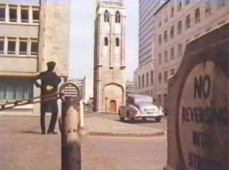
THE CHAMPIONS: The Invisible
Man (Cyril Frankel: April 1967)
Sir Fredrick () runs from his office and into his waiting car. He drives
away leaving his Chauffer watching dumfounded. Later Sharron and Craig watch as
Sir Fredrick is forced to run when his invisible companion attacks him.
St. Alphage Garden, EC2
RANDALL AND HOPKIRK DECEASED: My Late Lamented Friend and Partner ()
Sudbury House, 15 Newgate Street, EC3 (Demolished)
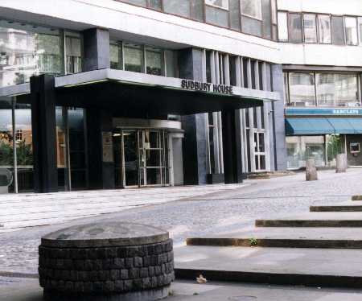
U.F.O. ()
International Astrophysical Commission.
Film: CROSSPLOT
Fleet Street, EC4
THE SAINT: Double Take (Leslie
Norman: April 1969)
Simon Templer visits the offices of The Daily Express to research Eugene
Patroclos' background.
London N..
Embassy Lodge, Regent's Park Road, N3
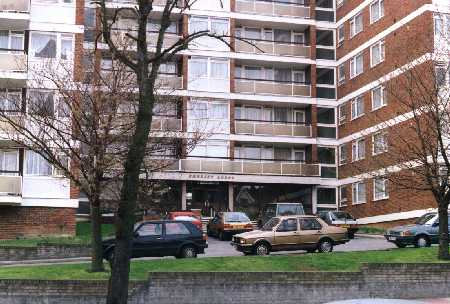
THE SAINT: The
Man Who Liked Lions (Jeremy Summers: July 1966)
Franco (Michael Wynne) drives Simon Templar to Tony Allard's apartment
block in Rome. While they are there, they are attacked by two villains who then
make their escape across the lobby car park. Later Claudia Molinelli
(Suzanne Lloyd) arrives at the apartment block to pick up Tony's diary.
THE SAINT: The Persistent Patriots ()
(Source: Sam Mitchell)
|
THE AVENGERS:
Something Nasty in the Nursery (James Hill: March 1967) |
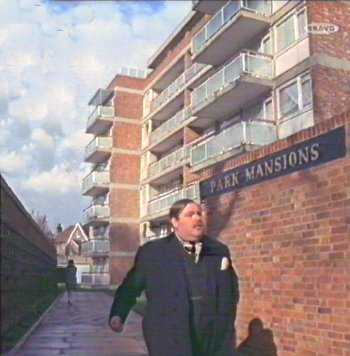 |
High Sheldon, Sheldon Avenue, N6
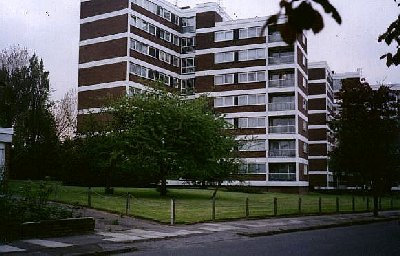
(Photo: Wyn Roberts May 2000)
THE AVENGERS: The Winged Avenger (Sidney
Hayers: January 1967)
A mysterious figure with razor-sharp claws stalks the offices of Simon Roberts
before starting to scale the side of the building with deadly intent.
(Identified by Wyn Roberts)
High Point 2, North Road, N6
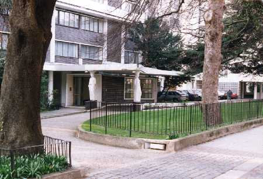
THE AVENGERS: The Girl from
Auntie (Roy Baker: October 1965)
Emma Peel's flat.
London SW..
Westminster Bridge, SW1
MAN IN A SUITCASE: Man from the Dead (Pat Jackson: August 1966)
A Russian agent stationed by Westminster Bridge sees Rachel Tyson leave her
house
THE PRISONER
In the title sequence of most episodes the secret agent is seen
driving his Lotus Seven across the bridge towards the Palace of Westminster.
THE PRISONER: Fall Out (Patrick McGoohan: December 1967)
Number 6 (Patrick McGoohan) and Butler (Angelo Muskat) run for a
bus that is just leaving its stop on Westminster Bridge.
THE CHAMPIONS: Nutcracker (Roy Ward Baker: February 1968)
The Champions break into Duncan's office near Westminster Bridge.
Parliament Square, SW1
THE PRISONER: Do Not Forsake Me Oh My Darling (Pat Jackson:
August 1967)
Number 6 drives his Lotus Seven past the Palace of Westminster on his way to his
old office.
THE PRISONER: Fall Out (Patrick McGoohan: December 1967)
Number 6 (Patrick McGoohan) and the Butler (Angelo Muscat) follow
the Australian Number 2 (Leo McKern) to the Houses of Parliament. Number
6 has to explain to a policeman what they are doing there. Later Number 6
drives past the Palace of Westminster on his way out of London.
MAN IN A SUITCASE: Man from the Dead (Pat Jackson: August 1966)
McGill is in London, and here are the Houses of Parliament to prove it.
Knightsbridge, SW1
MAN IN A SUITCASE: Man from the Dead (Pat Jackson: August 1966)
McGill visits his former colleagues at American Intelligence (Bowater House).
(Identified by: Wyn Roberts
May 2000)
Abingdon Street, SW1
THE PRISONER
In the title sequence of most episodes the secret agent is seen
driving his Lotus Seven down the ramp to an underground car park.
THE PRISONER: Do Not Forsake Me Oh My Darling (Pat Jackson:
August 1967)
Number 6 drives his Lotus Seven Lotus Seven down the ramp to the underground
car park of his old office.
Wilton Crescent,
SW1
(Identified by Wyn Roberts May 2000)
THE AVENGERS:
False Witness (Charles Crichton:
June 1968)
Lord Edgefield (William Job) arrives for his meeting with Mother (No.33).
Later Tara follows the milk float in her Cobra when it leaves the Dairy for
London (turning left into Wilton Crescent from Wilton Place).
Queen Anne's
Gate, SW1
THE PERSUADERS! ()
Brett Sinclair's House
Carlton House
Terrace, SW1
THE NEW AVENGERS ()
Gambit's flat.
(Source: Sam Mitchell)
Offices of the Institution of Civil Engineers, Great George Street, SW1
SABER OF LONDON ()
Mark Saber's office.
Eaton Place, SW1
MAN IN A SUITCASE:
Burden of Proof (Peter
Duffell: ??)
McGill pops into Henry Faversham's London Club (99 Eaton Place) to collect a
package.
(Identified by: Wyn Roberts
June 2000)
Film: THE CRYING GAME (1992)
The Mall, SW1
THE PRISONER: Arrival (Don Chaffey: September 1966)
The secret agent (Patrick McGoohan) leaves in his Lotus Seven after
resigning and passes Buckingham Palace on his way home.
THE PRISONER: Do Not Forsake Me Oh My Darling (Pat Jackson:
August 1967)
On his way home Number 6 drives his Lotus Seven past Buckingham Palace.
THE AVENGERS: Homicide and Old Lace
(John Hough: January 1969)
Operation Rule Britannia is put in place and the treasures of Buckingham Palace
are removed.
Belgrave Mews South SW1
THE PERSUADERS!: Element Of Risk
Danny is taken to Lomax's hidout.
(found by Wyn Roberts and Jaz Wiseman, July 2000)
Buckingham Place, SW1
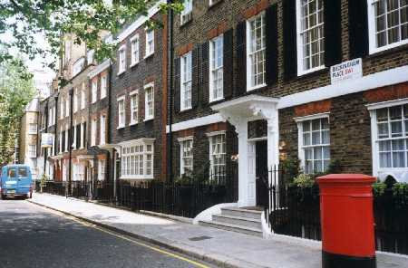
THE PRISONER ()
No.6's House seen in the title Sequence most episodes
THE PRISONER: Many Happy Returns (Joseph Serf: February/April
1967)
Number 6 (Patrick McGoohan) returns home only to find his house
occupied. The maid () turns him away but he is allowed in by her
mistress () who arrives in Number 6's own car.
THE PRISONER: Do Not Forsake Me Oh My Darling (Pat Jackson:
August 1967)
Number 6 (Nigel Stock) drives his Lotus Seven as he returns to his old
office.
THE PRISONER: Fall Out (Patrick McGoohan: December 1967)
Number 6 (Patrick McGoohan) arrives at his house on foot with the Butler
(Angelo Muskat). As the Butler enters the house he turns to watch his
new master drive off in his Lotus Seven.
Stag Place, SW1
THE PRISONER
In the title sequence of most episodes the secret agent look out of his window
at the nearby office block before collapsing.
THE PRISONER: Many Happy Returns (Joseph Serf: February/April
1967)
Number 6 (Patrick McGoohan) walks home past the statue of a stag after
his escape from the village.
Montpelier Walk, SW7
THE NEW AVENGERS: Sleeper ()
Bus stop scene.
(Source: Sam Mitchell)
Courtfield Mews, SW7
THE PROTECTORS ()
Harry Rule's flat.
(Source: Sam Mitchell)
Ennismore Gardens SW7
MAN IN A SUITCASE: Who's Mad Now? (Freddie Francis: 1967)
After lunch, McGill (Richard Bradford) leaves Joan Hyman and returns to his
hotel (Kingston House
South).
(found by Wyn Roberts and Jaz Wiseman, July 2000)
Queensgate SW7
THE PERSUADERS!: Element Of Risk
Mistaken for Lomax, Danny is driven past the Natural History .Museum on his way
to the hideout.
(found by Wyn Roberts and Jaz Wiseman, July 2000)
Battersea Park, The Parade, SW11
THE SAINT: The
Organisation Man (Leslie Norman: February 1968)
Simon Templar passes his initiation test when he shoots Mr. Spode (Norman
Bird) as he is walking by the Thames.
London SE
Southwark Bridge, SE1
MAN IN A SUITCASE:
Man from the Dead (Pat Jackson: August
1966)
McGill follows the man who is following Rachel (Angela Browne) as she crosses a
bridge. She descends to the embankment below (Bankside SE1) being followed all
the while.
(Spotted by Alan Leventhall, September 1994)
Anchor Public House, Bankside, SE1
MAN IN A SUITCASE:
Man from the Dead (Pat Jackson: August
1966)
Rachel walks beside the river and comes to an outdoor, rooftop area
(demolished) run by The Anchor public house. She then enters a pub as McGill
(Richard Bradford) deals with the man who was following her. He then chases
down a corridor/tunnel (under the railway bridge) after a mysterious figure
that could be Harry Tyson. McGill makes his way to the pub to talk with Rachel.
(Spotted by Alan Leventhall, September 1994)
Film: MISSION IMPOSSIBLE (1996)
To Contents